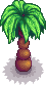

Palm Tree
Jump to navigation
Jump to search
| Palm Tree | |
 | |
| Information | |
| Seed | None |
| Tapper Product | N/A |
| Growth Time | Variable |
A Palm Tree is a type of Tree found in the Calico Desert and on Ginger Island. It does not drop any seeds, so it cannot be planted elsewhere. It can be chopped down, and may drop a Coconut when shaken or chopped down (but only after the player has reached Foraging level 1). Palm Trees on Ginger Island can also drop Golden Coconuts. After being chopped down, a Palm Tree has approximately a 20% chance to grow to the next stage each day.
Stages of Growth
| Stage 1 | Stage 2 | Stage 3 - Desert / Island | Stump |
|---|---|---|---|
 
|
Notes
- Despite being described in game as a "seed of the coconut palm," coconuts cannot be planted to grow Palm Trees.
History
- 1.4: Removed bug allowing Palm Trees to be tapped. Palm trees now make noise when shaken in Winter.
- 1.5: Added new sprite for Palm Trees on Ginger Island.
| Trees | |
|---|---|
| Trees | Green Rain Trees • Mahogany Tree • Maple Tree • Mushroom Tree • Mystic Tree • Oak Tree • Palm Tree • Pine Tree |
| Fruit Trees | Apple Tree • Apricot Tree • Banana Tree • Cherry Tree • Mango Tree • Orange Tree • Peach Tree • Pomegranate Tree |
| Seeds | Acorn • Mahogany Seed • Maple Seed • Mossy Seed • Mushroom Tree Seed • Pine Cone • Mystic Tree Seed |
| Fruit | Apple • Apricot • Banana • Cherry • Mango • Orange • Peach • Pomegranate |
| Misc | Large Log • Large Stump • Tea Bush |